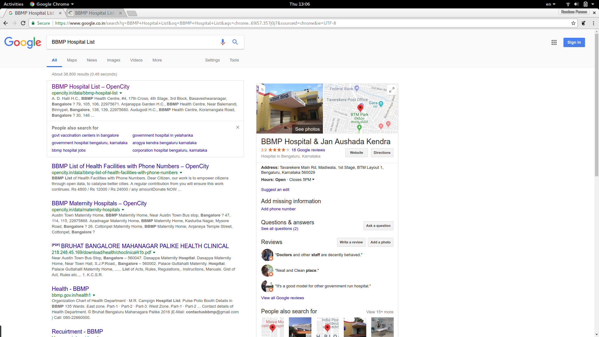
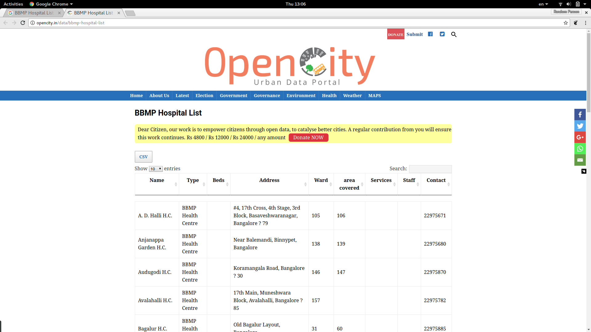
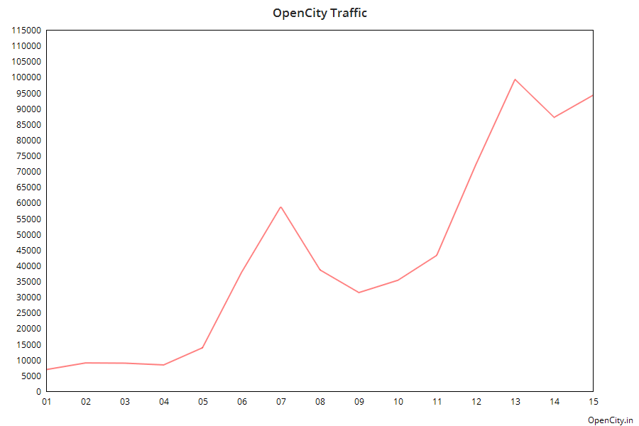

OpenCity.IN
Urban Data Portal
by
Thejesh GN
Who am I?
I am Thejesh GN, Technologist from Bangalore.
Co-founder of DataMeet Community.
DataMeet is a community of Data Science and Open Data enthusiasts in India.
What's OpenCity?
OpenCity.in is an Urban Data Portal
A collaboration between Oorvani Foundation and DataMeet.
It's a minimum viable product to prove the idea
Idea
Opening up data beyond academic use
Make it simple and searchable*
Documents are also data
Just enough technology to deliver the service
Build Community
Implementation
A simple website
Data - CSV, PDF or KMLs
No API's
Optimize it for Google and other search engines
Getting Things Done and Get Back to Work
How did it go?
405 Cleaned Datasets and 1165 Documents
Three cities
Multiple Open Work Day Meetups
Find it

Get it

People like it

What next?
More cities
Build Bigger Community
APIs and Visuals?
Thank You
BY Thejesh GN / thejeshgn.com
Watch this movie when you find time. Thank you.